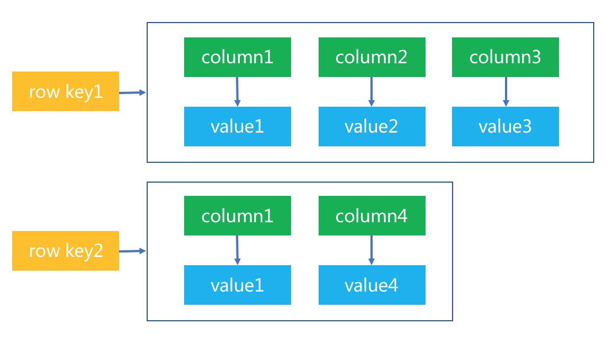
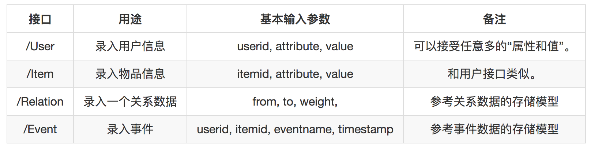

- 00 开篇词 用知识去对抗技术不平等.md
- 01 你真的需要个性化推荐系统吗_.md
- 02 个性化推荐系统有哪些绕不开的经典问题？.md
- 03 这些你必须应该具备的思维模式.md
- 04 画鬼容易画人难：用户画像的“能”和“不能”.md
- 05 从文本到用户画像有多远.md
- 06 超越标签的内容推荐系统.md
- 07 人以群分，你是什么人就看到什么世界.md
- 08 解密“看了又看”和“买了又买”.md
- 09 协同过滤中的相似度计算方法有哪些.md
- 10 那些在Netflix Prize中大放异彩的推荐算法.md
- 11 Facebook是怎么为十亿人互相推荐好友的.md
- 12 如果关注排序效果，那么这个模型可以帮到你.md
- 13 经典模型融合办法：线性模型和树模型的组合拳.md
- 14 一网打尽协同过滤、矩阵分解和线性模型.md
- 15 深度和宽度兼具的融合模型 Wide and Deep.md
- 16 简单却有效的Bandit算法.md
- 17 结合上下文信息的Bandit算法.md
- 18 如何将Bandit算法与协同过滤结合使用.md
- 19 深度学习在推荐系统中的应用有哪些_.md
- 20 用RNN构建个性化音乐播单.md
- 21 构建一个科学的排行榜体系.md
- 22 实用的加权采样算法.md
- 23 推荐候选池的去重策略.md
- 24 典型的信息流架构是什么样的.md
- 25 Netflix个性化推荐架构.md
- 26 总览推荐架构和搜索、广告的关系.md
- 27 巧妇难为无米之炊：数据采集关键要素.md
- 28 让你的推荐系统反应更快：实时推荐.md
- 29 让数据驱动落地，你需要一个实验平台.md
- 30 推荐系统服务化、存储选型及API设计.md
- 31 推荐系统的测试方法及常用指标介绍.md
- 32 道高一尺魔高一丈：推荐系统的攻防.md
- 33 和推荐系统有关的开源工具及框架介绍.md
- 34 推荐系统在互联网产品商业链条中的地位.md
- 35 说说信息流的前世今生.md
- 36 组建推荐团队及工程师的学习路径.md
- 加餐 推荐系统的参考阅读.md
- 结束语 遇“荐”之后，江湖再见.md
30 推荐系统服务化、存储选型及API设计
在过往的文章中，我讲到了推荐系统方方面面的相关概念。那么说，对于认识一个推荐系统来说，还差最后一个问题需要解决，那就是：万事俱备，如何给用户提供一个真正的在线推荐服务呢？
服务化是最后一步
其实一个推荐系统的在线服务，和任何别的在线服务相比，也没有什么本质区别，只是仍然还有一些特殊性。
提供一个在线服务，需要两个关键元素：数据库和API。今天我就来专门说一说推荐系统中大家常常用到的数据库，并会谈谈推荐系统的API应该如何设计。
存储
这里注意一下，今天这里讲到的存储，专指近线或者在线部分所用的数据库，并不包括离线分析时所涉及的业务数据库或者日志数据库。
近线和在线的概念我在前面已经讲到过。推荐系统在离线阶段会得到一些关键结果，这些关键结果需要存进数据库，供近线阶段做实时和准实时的更新，最终会在在线阶段直接使用。
首先来看一下，离线阶段会产生哪些数据。按照用途来分，归纳起来一共就有三类。
- 特征。特征数据会是最多的，所谓用户画像，物品画像，这些都是特征数据，更新并不频繁。
- 模型。尤其是机器学习模型，这类数据的特点是它们大都是键值对，更新比较频繁。
- 结果。就是一些推荐方法在离线阶段批量计算出推荐结果后，供最后融合时召回使用。任何一个数据都可以直接做推荐结果，如协同过滤结果。
如果把整个推荐系统笼统地看成一个大模型的话，它依赖的特征是由各种特征工程得到的，这些线下的特征工程和样本数据共同得到模型数据，这些模型在线上使用时，需要让线上的特征和线下的特征一致，因此需要把线下挖掘的特征放到线上去。
特征数据有两种，一种是稀疏的，一种是稠密的，稀疏的特征常见就是文本类特征，用户标签之类的，稠密的特征则是各种隐因子模型的产出参数。
特征数据又常常要以两种形态存在：一种是正排，一种是倒排。
正排就是以用户ID或者物品ID作为主键查询，倒排则是以特征作为主键查询。
两种形态的用途在哪些地方呢？在需要拼凑出样本的特征向量时，如线下从日志中得到曝光和点击样本后，还需要把对应的用户ID和物品ID展开成各自的特征向量，再送入学习算法中得到最终模型，这个时候就需要正排了。
另一种是在需要召回候选集时，如已知用户的个人标签，要用个人标签召回新闻，那么久就需要提前准备好标签对新闻的倒排索引。
这两种形态的特征数据，需要用不同的数据库存储。正排需要用列式数据库存储，倒排索引需要用KV数据库存储。前者最典型的就是HBase和Cassandra，后者就是Redis或Memcached。稍后再介绍这几个数据库。
另外，对于稠密特征向量，例如各种隐因子向量，Embedding向量，可以考虑文件存储，采用内存映射的方式，会更加高效地读取和使用。
模型数据也是一类重要的数据，模型数据又分为机器学习模型和非机器学习模型。
机器学习模型与预测函数紧密相关。模型训练阶段，如果是超大规模的参数数量，业界一般采用分布式参数服务器，对于达到超大规模参数的场景在中小公司不常见，可以不用牛刀。
而是采用更加灵活的PMML文件作为模型的存储方式，PMML是一种模型文件协议，其中定义模型的参数和预测函数，稍后也会介绍。
非机器学习模型，则不太好定义，有一个非常典型的是相似度矩阵，物品相似度，用户相似度，在离线阶段通过用户行为协同矩阵计算得到的。相似度矩阵之所算作模型，因为，它是用来对用户或者物品历史评分加权的，这些历史评分就是特征，所以相似度应该看做模型数据。
最后，是预先计算出来的推荐结果，或者叫候选集，这类数据通常是ID类，召回方式是用户ID和策略算法名称。这种列表类的数据一般也是采用高效的KV数据库存储，如Redis。
另外，还要介绍一个特殊的数据存储工具：ElasticSearch。这原本是一个构建在开源搜索引擎Lucene基础上的分布式搜索引擎，也常用于日志存储和分析，但由于它良好的接口设计，扩展性和尚可的性能，也常常被采用来做推荐系统的简单第一版，直接承担了存储和计算的任务。
下面我逐一介绍刚才提到的这些存储工具。
1.列式数据库
所谓列式数据库，是和行式数据库相对应的，这里不讨论数据库的原理，但是可以有一个简单的比喻来理解这两种数据库。
你把数据都想象成为矩阵，行是一条一条的记录，例如一个物品是一行，列是记录的各个字段，例如ID是一列，名称是一列，类似等等。
当我们在说行和列的时候，其实是在大脑中有一个抽象的想象，把数据想象成了二维矩阵，但是实际上，数据在计算机中，管你是行式还是列式，都要以一个一维序列的方式存在内存里或者磁盘上。
那么有意思的就来了，是按照列的方式把数据变成一维呢，还是按照行的方式把数据变成一维呢，这就是列式数据库和行式数据库的区别。
当然实际上数据库比这复杂多了，这只是一个简单形象的说明，有助于你去理解数据的存储方式。
列式数据库有个列族的概念，可以对应于关系型数据库中的表，还有一个键空间的概念，对应于关系型数据库中的数据库。
众所周知，列式数据库适合批量写入和批量查询，因此常常在推荐系统中有广泛应用。列式数据库当推Cassandra和HBase，两者都受Google的BigTable影响，但区别是：Cassandra是一个去中心化的分布式数据库，而HBase则是一个有Master节点的分布式存储。
Cassandra在数据库的CAP理论中可以平滑权衡，而HBase则是强一致性，并且Cassandra读写性能优于HBase，因此Cassandra更适合推荐系统，毕竟推荐系统不是业务逻辑导向的，对强一致性要求不那么强烈，这和我在一开始建议“你要建立起不确定思维”是一脉相承的。
Cassandra的数据模型组织形式如下图所示：

从这个图可以看出来，可以通过行主键及列名就可以访问到数据矩阵的单元格值。
前面也说过，用户和物品的画像数据适合存储在Cassandra中。也适合存储模型数据，如相似度矩阵，还可以存储离线计算的推荐结果。
2.键值数据库
除了列式数据库外，还有一种存储模式，就是键值对内存数据库，这当然首推Redis。Redis你可以简单理解成是一个网络版的HashMap，但是它存储的值类型比较丰富，有字符串、列表、有序列表、集合、二进制位。
并且，Redis的数据放在了内存中，所以都是闪电般的速度来读取。
在推荐系统的以下场景中常常见到Redis的身影：
- 消息队列，List类型的存储可以满足这一需求；
- 优先队列，比如兴趣排序后的信息流，或者相关物品，对此sorted set类型的存储可以满足这一需求；
- 模型参数，这是典型的键值对来满足。
另外，Redis被人诟病的就是不太高可用，对此已经有一些集群方案，有官方的和非官方的，可以试着加强下Redis的高可用。
3.非数据库
除了数据库外，在推荐系统中还会用到一些非主流但常用的存储方式。第一个就是虚拟内存映射，称为MMAP，这可以看成是一个简陋版的数据库，其原理就是把磁盘上的文件映射到内存中，以解决数据太大不能读入内存，但又想随机读取的矛盾需求。
哪些地方可以用到呢？比如你训练的词嵌入向量，或者隐因子模型，当特别大时，可以二进制存在文件中，然后采用虚拟内存映射方式读取。
另外一个就是PMML文件，专门用于保存数据挖掘和部分机器学习模型参数及决策函数的。当模型参数还不足以称之为海量时，PMML是一个很好的部署方法，可以让线上服务在做预测时并不依赖离线时的编程语言，以PMML协议保存离线训练结果就好。
API
除了存储，推荐系统作为一个服务，应该以良好的接口和上有服务之间交互，因此要设计良好的API。
API有两大类，一类数据录入，另一类是推荐服务。数据录入API，可以用于数据采集的埋点，或者其他数据录入。

推荐服务的API按照推荐场景来设计，则是一种比较常见的方式，下面分别简单说一下API的样子。
1.猜你喜欢
接口：
/Recommend
输入：
* UserID – 个性化推荐的前提- * PageID – 推荐的页面ID，关系到一些业务策略- * FromPage – 从什么页面来- * PositionID – 页面中的推荐位ID- * Size – 请求的推荐数量- * Offset – 偏移量，这是用于翻页的
输出：
* Items – 推荐列表，通常是数组形式，每一个物品除了有ID，还有展示所需的各类元素- * Recommend_id – 唯一ID标识每一次调用，也叫做曝光ID，标识每一次曝光，用于推荐后追踪推荐效果的，很重要- * Size – 本次推荐数量- * Page —— 用于翻页的
2.相关推荐
接口：
/Relative
输入：
* UserID – 个性化推荐的前提- * PageID – 推荐的页面ID，关系到一些业务策略- * FromPage – 从什么页面来- * PositionID – 页面中的推荐位ID- * ItemID – 需要知道正在浏览哪个物品导致推荐相关物品- * Size – 请求的推荐数量- * Offset – 偏移量，这是用于翻页的
输出：
* Items – 推荐列表，通常是数组形式，每一个物品除了有ID，还有展示所需的各类元素- * Recommend_ID – 唯一ID标识每一次调用，也叫做曝光ID，标识每一次曝光，用于推荐后追踪推荐效果的，很重要- * Size – 本次推荐数量- * Page —— 用于翻页的
3.热门排行榜
接口：
/Relative
输入：
* UserID – 个性化推荐的前提- * PageID – 推荐的页面ID，关系到一些业务策略- * FromPage – 从什么页面来- * PositionID – 页面中的推荐位ID- * Size – 请求的推荐数量- * Offset – 偏移量，这是用于翻页的
输出：
* Items – 推荐列表，通常是数组形式，每一个物品除了有ID，还有展示所需的各类元素- * Recommend_id – 唯一ID标识每一次调用，也叫做曝光ID，标识每一次曝光，用于推荐后追踪推荐效果的，很重要- * Size – 本次推荐的数量- * Page —— 用于翻页的
相信你看到了吧，实际上这些接口都很类似。
总结
今天我主要讲解了推荐系统上线的两大问题，一个是线上数据存储，另一个是推荐系统的API有哪些。
虽然实际情况肯定不是只有这点问题，但是这些也足以构建出一个简单的推荐系统线上版了。
你还记得在前几篇专栏中，我提到统一考虑搜索和推荐的问题吗？那么说，如果要把推荐和搜索统一考虑的话，API该如何设计呢？欢迎留言一起讨论。感谢你的收听，我们下期再见。
© 2019 - 2023 Liangliang Lee. Powered by gin and hexo-theme-book.